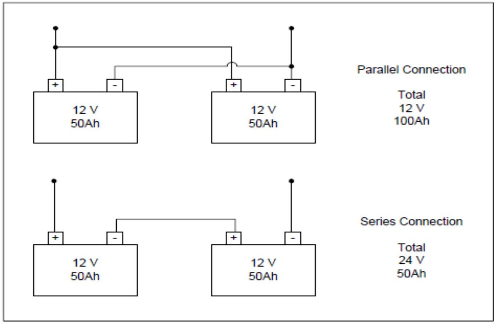

Battery Connections, Selection & Maintenance
CONNECTIONS TO OTHER BATTERIES
A battery can be connected to other batteries if all of them are the same (type, model, age). Wire size should be 6 mm 2 or more and wire length must be shortened as much as possible.
By parallel connection, voltage is the same and capacity is the sum of the battery capacities.
By series connection, voltage is the sum of battery voltage and capacity is the same.
CHOOSING THE BEST BATTERY
When choosing your battery take the following things into consideration:
- Price. At the end of the day, a decision must be made on the cost of equipment. Some very good batteries are available for high prices - the buyer must decide what is important based on the particular needs of the system. On the other hand, many small household solar PV systems in Africa and
- Capacity. Choosing the right size battery for your needs is important.
- Cycle life. In general, the better the battery, the longer the cycle life. Remember that batteries with lead-calcium plates have a lower tolerance for deep discharges. If your system is likely to be deeply discharged regularly choose lead-antimony plates instead.
- Replacement and availability. It is wise to choose a battery that is locally available. When the time comes to replace the set, it is more likely that you will be able to find a similar type. Shipping batteries across the world is expensive, time-consuming and energy intensive.
- Maintenance. Choose a battery that meets your maintenance needs and capabilities. If batteries are unlikely to be maintained, consider spending a little bit more on 'maintenance-free' units. Remember, no battery is truly 'maintenance free' because the system must be managed or it will not work well!
- Size. Be aware of the physical size of the battery and where it is going to be placed. Make sure you use a safe area to enclose or house it.
- Mobility. If your battery is going to be moved around (not recommended but sometimes necessary) choose a type that will not be damaged by vibration and tilting.
Tasks involved in maintaining and managing batteries include:
- Regular checking of state of charge to ensure that the battery is performing well; keeping state of charge records may help to detect when a battery is getting too old to use or when a cell has gone bad.
- For flooded-cell batteries, checking electrolyte levels in each cell; replacing electrolyte lost during gassing with de-ionized water. The plates should always be below the level of the electrolyte to avoid damage to the battery. De-ionized water, available at battery shops and garages, is used instead of tap water because it does not contain any impurities that could damage the cells. Never add tap water or acid to batteries.
- Cleaning the top of the battery. This avoids high rates of self-discharge caused by electrical conduction through acid mist accumulating on top of the battery.
- Cleaning terminals and contacts. Cleaning the terminals ensures a good electrical contact with the solar array and load. Application of petroleum jelly or grease to the terminals prevents them from becoming corroded.
- Giving the battery equalizing charges to mix up the electrolyte four to six times a year. Equalizing charges are charges well above the normal 'full' charge which cause the electrolyte in the cells to bubble and get mixed up and reduce risk of stratification or sulphation. Preferably, these charges should be done in the cloudy season or when the solar radiation is low.
CHOOSING THE BATTERY LOCATION
Batteries should be located in a cool, vented room. Here are some general guidelines for locating and installing the batteries.
- Nearness to array: batteries should be located as close as possible to the array to reduce voltage drop. The cable is generally sized large enough to carry the charge current from the module with 2 per cent or less voltage drop.
- Ventilation: the battery room must have some sort of opening for air to enter and leave. Batteries emit explosive gases when charging and this must be allowed to escape. Place a 'No Smoking or Naked Flames' sign in the room where the batteries are located.
- Accessibility: batteries should be accessible for easy state-of-charge measurement and cleaning, but only to authorized persons.
- Temperature: batteries should be located in a cool place. If battery temperature gets above $40^{\circ} \mathrm{C}\left(104^{\circ} \mathrm{F}\right)$, its lifetime and performance will be reduced. Never place a battery where it will be exposed to the sun.
- Battery boxes: batteries should not be placed directly on the floor as moisture or accidental puddles can increase their self-discharge rates. They should be kept in a vented box to prevent children and animals from injuring themselves and to prevent accidental short circuits
- Security and safety: locate batteries where they are secure and not likely to be stolen. A closet or room where children and animals cannot tamper with it might be suitable for a battery box containing two batteries. Battery boxes or rooms should be locked, but always ensuring that the key is nearby for quick access.
SAFETY
A lead-acid battery contains sulfuric acid and produce gas during charging. When shortcircuited, a battery discharges huge amount of current and a wire will melt down or cause fire. For safety, you must follow these items.
- Store in cool place.
- Ensure enough airflow to release a gas.
- Avoid short circuit.
- Do not touch acid. If acid contacts skins, eyes, wash with plenty of water immediately.
- Place in a battery box and keep away from children.
MAINTENANCE OF A BATTERY
Batteries usually cause the most troubles in SHS, hence the use of maintenance free battery is strongly recommended. In the case where a refill type battery is used,
- Check electrolyte level once a month.
- If electrolyte level is low, add distilled water.
- Do NOT add too much distilled water.
- Do NOT add tap water. If tap water is added, the battery will be damaged.
- Check specific gravity of each unit cell periodically. When specific gravity of each unit cell becomes vary, do equalization. In the case where a flooded type battery is used,
- Shake battery once a week to mix electrolyte.
COMMON PROBLEMS
Most failures of a SHS are related to batteries as shown below.
- Poor quality of battery. (Short lifetime)
- Lack of maintenance for refill battery: Drying up of electrolyte. Addition of tap water. Addition of too much distilled water.
- Capacity of a battery is too big as compared to PV module size.
- Stratification of electrolyte reduces capacity and lifetime.
- Corrosion caused by sulfuric acid.
- Dumping of dead battery. (Lead is hazardous)
Do NOT expect:
- Users to buy distilled water.
- Users to maintain electrolyte level properly.
- Users not to add tap water.